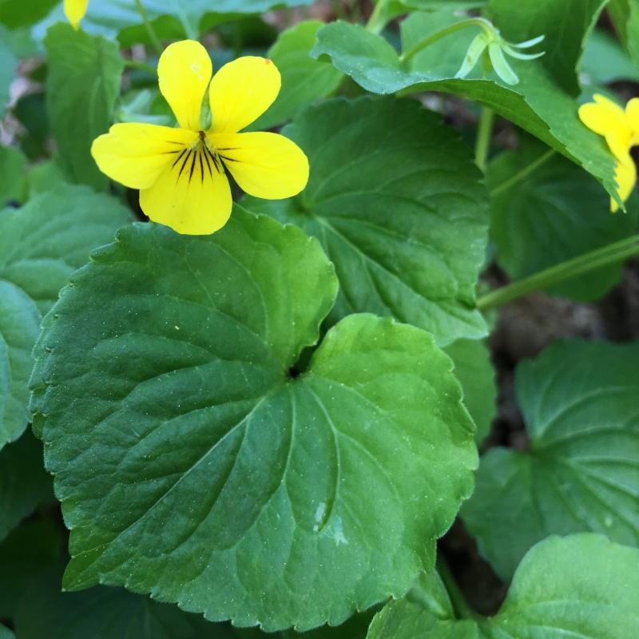

Viola glabella
Common names
Smooth Yellow Violet
Stream Violet
Family
Violaceae
Family common name
Violet Family
Blooms
February - August
Habitat
Streambanks, moist forests, to high elevations.
Range Map